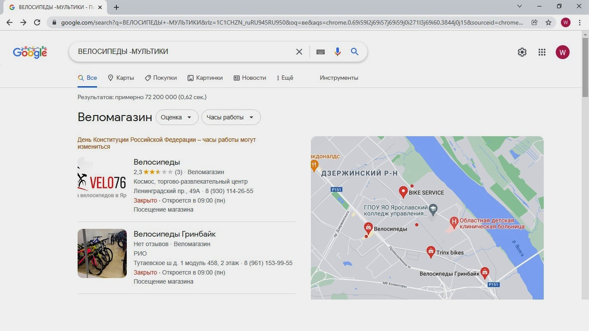
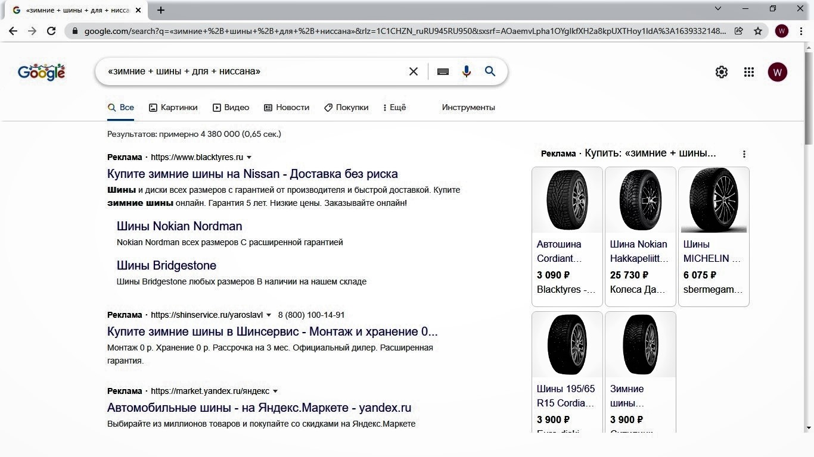
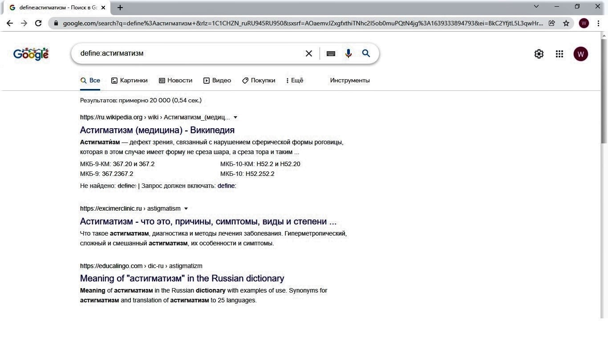
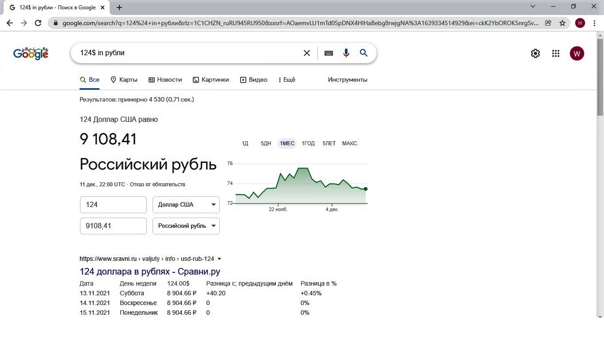
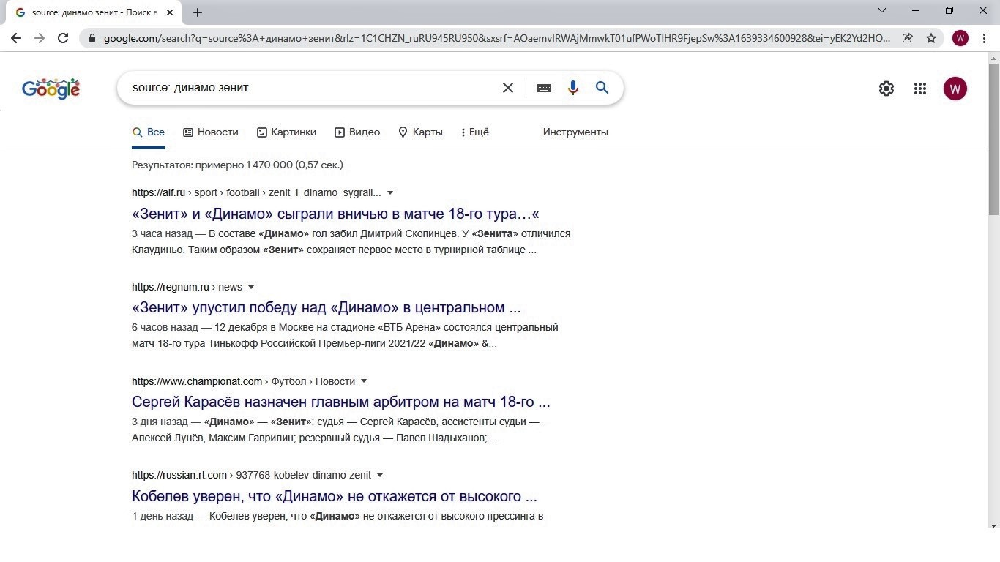
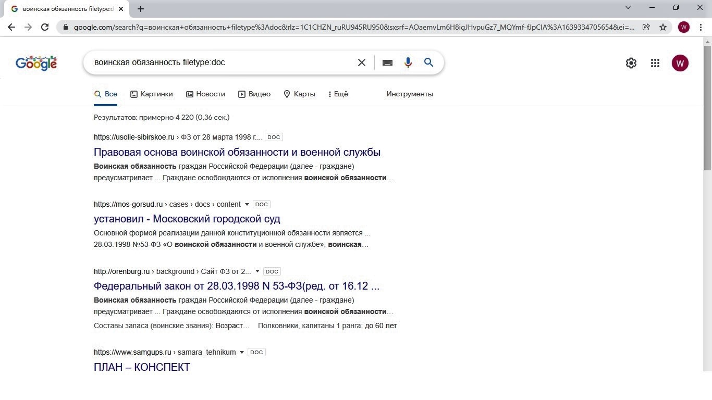

Поиск в системе Google
Google давно стал первым помощником в поиске любой интересующей пользователя информации.
Эти объемы данных настолько велики, что алгоритмы выдачи не всегда выдают то, что мы ищем на самом деле.
Чтобы искать информацию быстро и точечно, существуют так называемые операторы поиска Google.
Это специальные команды и наборы символов, которые сужают выборку по нужным критериям, сокращая время поиска информации.
В данной статье собраны основные и полезные операторы поиска в системе Google. Если вы хотите узнать другие поисковые операторы, то жмите ОЗНАКОМИТЬСЯ."
Основные операторы поиска Google
- - :исключает слова из результатов поиска
Если в запросе присутствует слово или термин, который необходимо исключить из результатов поиска и не ассоциировать его с введенным запросом, следует вставить знак — (минус) перед этим словом.
ПРИМЕР: велосипеды –мультики

- + :оператор «плюс» используется для нахождения слов в одном предложении, просто вставьте данный символ между словами.
Например, сделав запрос типа «зимние + шины + для + ниссана», вы получите в выдаче те сайты, в которых есть предложения с полным набором всех слов из запроса.

- define: Оператор позволяет находить значения слов, предлагая результаты выдачи из достоверных источников.
ПРИМЕР:define:астигматизм

- in: Понятный оператор, использование которого запускает конвертацию валют и любых числовых величин.
ПРИМЕР:124$ in рубли

- source: Оператор, который позволяет найти новости в Google News заданной тематики из конкретного новостного источника.
ПРИМЕР: source:динамо зенит

- filetype: С помощью этого оператора можно найти конкретные типы документов в соответствии с их расширением: pdf, doc, xls, ppt, txt, svf, avi, mov, а также архивов zip и rar и др.
ПРИМЕР: воинская обязанность filetype:doc
